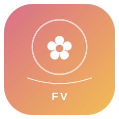
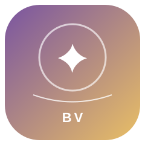
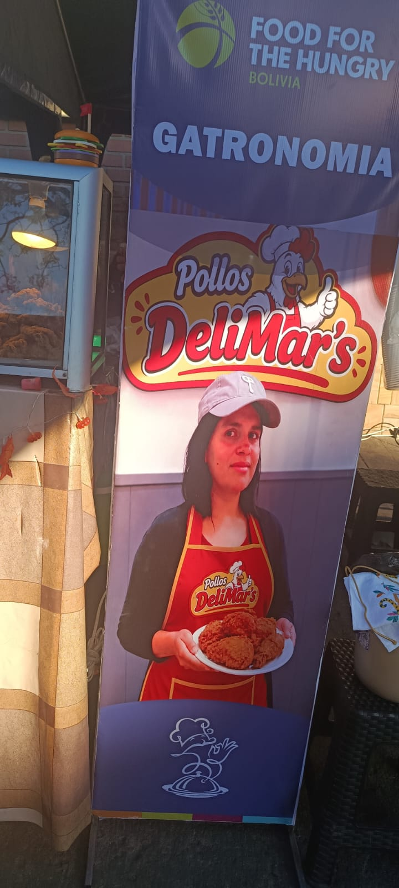
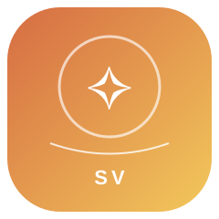
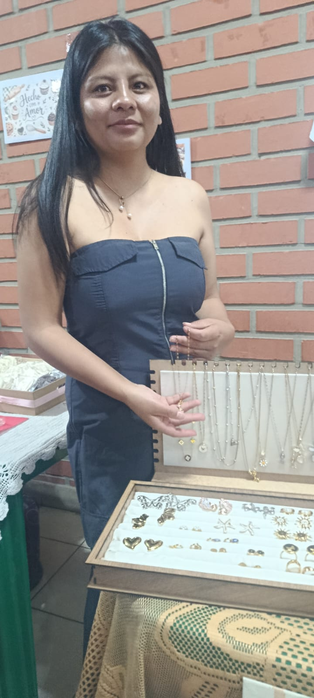
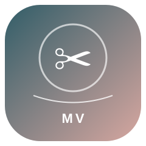
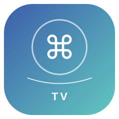
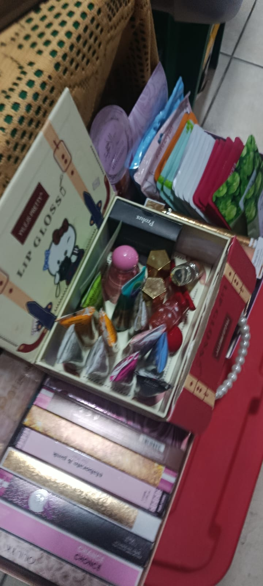
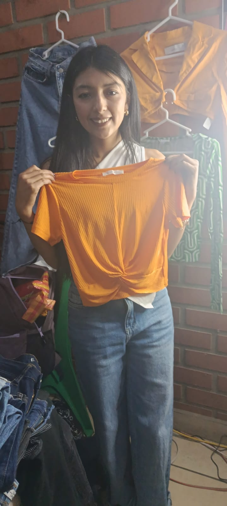

01
01

CREACIONES ARTESANALESFlores & Detalles
Flores decorativas, arreglos coloridos y detalles hechos con creatividad para regalar y ambientar espacios.
Explorar rubro ↗Recorre los emprendimientos, descubre sus productos y conoce el talento detrás de cada propuesta. También encontrarás preguntas y respuestas relacionadas con lo observado durante la feria.
Explorar los rubros
Feria Viva reúne seis rubros identificados a partir de las fotografías y el video compartidos. Cada sección presenta preguntas y respuestas informativas sobre los productos, las actividades y las experiencias de la feria.
01

CREACIONES ARTESANALESFlores decorativas, arreglos coloridos y detalles hechos con creatividad para regalar y ambientar espacios.
Explorar rubro ↗ 02
02

BISUTERÍA Y ACCESORIOSAccesorios y piezas decorativas que combinan color, materiales y estilo personal.
Explorar rubro ↗
03
GASTRONOMÍA Y BEBIDASUna muestra de propuestas gastronómicas y bebidas que forman parte de la experiencia de la feria.
Explorar rubro ↗
04
TEXTILES, ROPA Y ACCESORIOSPrendas, textiles y propuestas de vestimenta presentes en los materiales de la feria, con atención al estilo y la presentación.
Explorar rubro ↗ 05
05

TECNOLOGÍA Y SERVICIOS DIGITALESEspacios y propuestas relacionadas con tecnología, comunicación, equipos y servicios digitales observados en el recorrido.
Explorar rubro ↗
06Materiales, herramientas e insumos que pueden apoyar el trabajo manual y la creación de productos.
Explorar rubro ↗Imágenes del material recopilado durante el recorrido.


Mira el video recopilado para conocer mejor el ambiente de la feria.
Este es el texto de diseño utilizado como guía para crear la identidad visual del sitio.
Diseña un logotipo vectorial profesional para una feria de emprendimientos llamada “Feria Viva”. Debe transmitir creatividad, comunidad, talento local y crecimiento. Utiliza un símbolo floral/estelar sencillo pero distintivo, formas limpias, buena legibilidad y una composición equilibrada. Paleta cálida con rosa coral, crema y amarillo dorado, acompañada de tonos oscuros para el contraste. Estilo contemporáneo, amable y elegante, apropiado para una feria académica de emprendimientos. El logotipo debe funcionar en tamaños pequeños y grandes, tener fondo transparente, evitar detalles excesivos y no incluir texto adicional aparte del nombre “Feria Viva”. Entregar como gráfico vectorial SVG.